Mesma semente (7), configurações padrão, 1920x1080. Antes à esquerda, depois à direita.
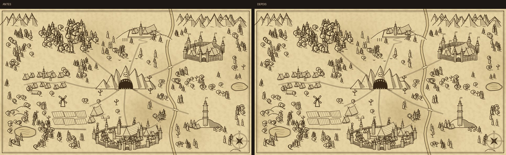
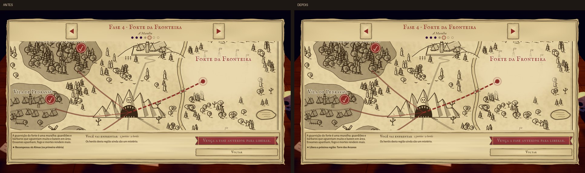
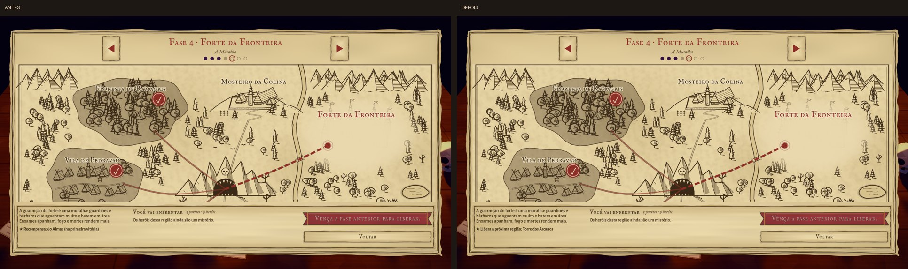
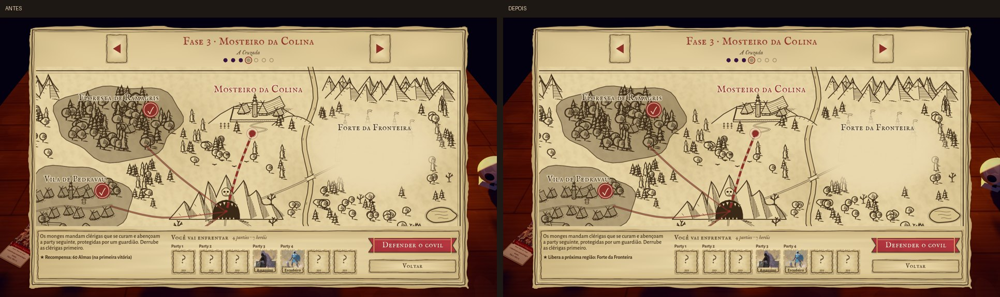
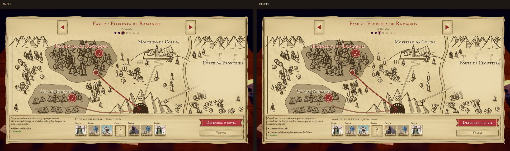
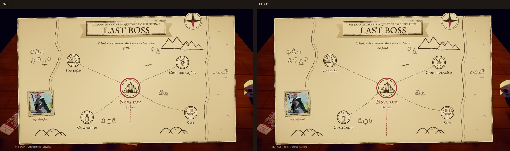
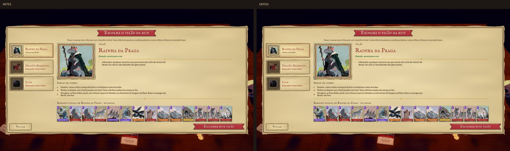
Sem Almas: "Cartas liberadas: n de t" no lugar do contador.
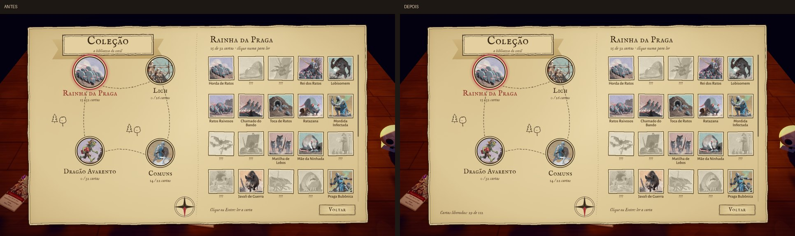
Variações de arte escondidas (aparecem com --variantes).
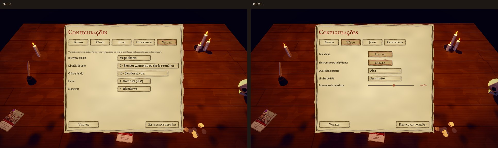
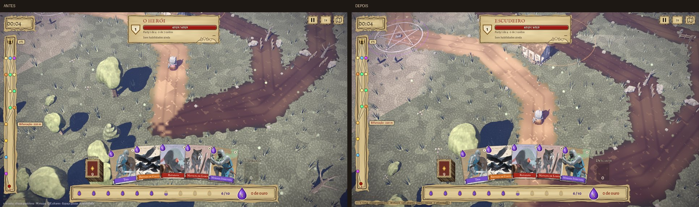
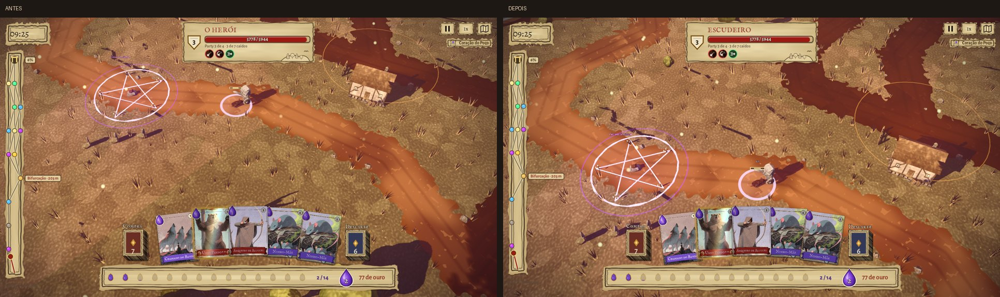
Painel com o nome da classe; estrada sem degrau na emenda dos trechos.
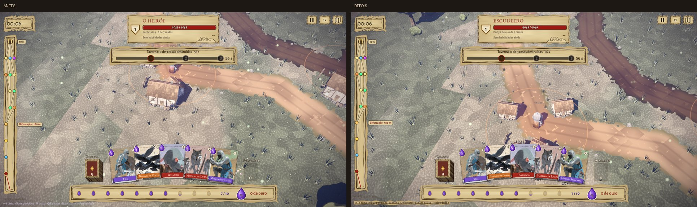
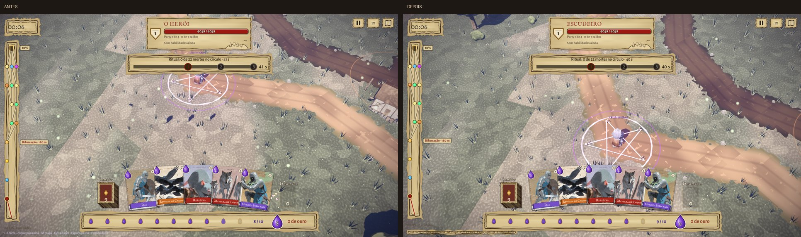
"Herói caído! Escolha 1" no lugar de "Subiu de nível!"; dica com folga; ajuda do rodapé em etiqueta de papel.
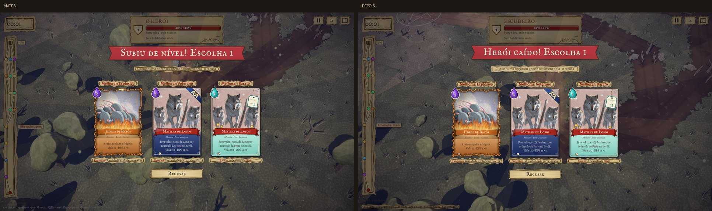
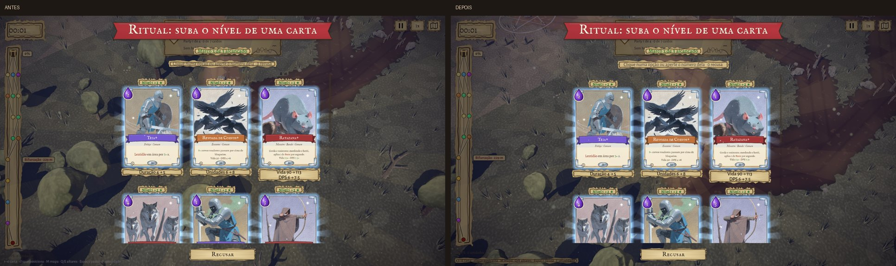
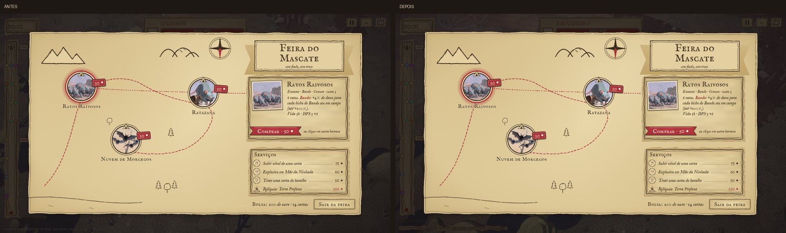
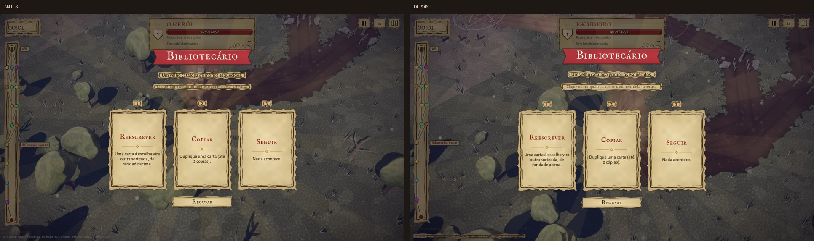
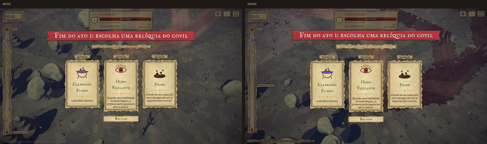
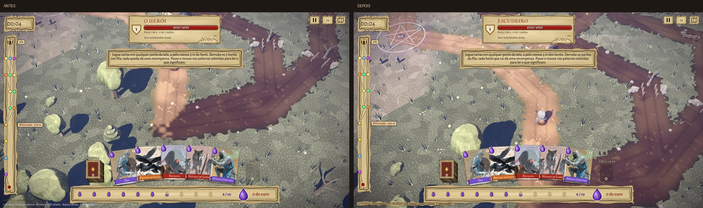
"A PARTY" no painel com mais de um herói; tom de cada classe tirado da carta.
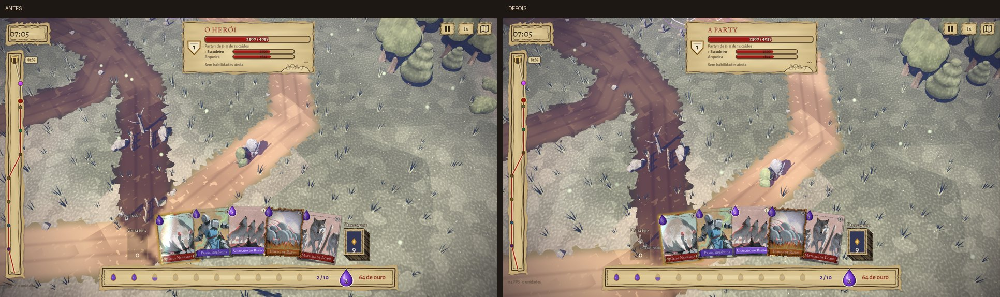
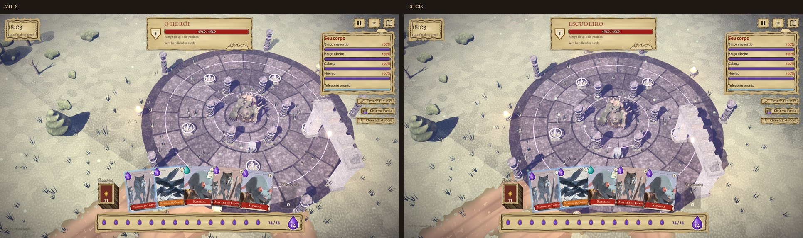
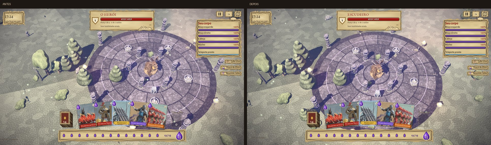
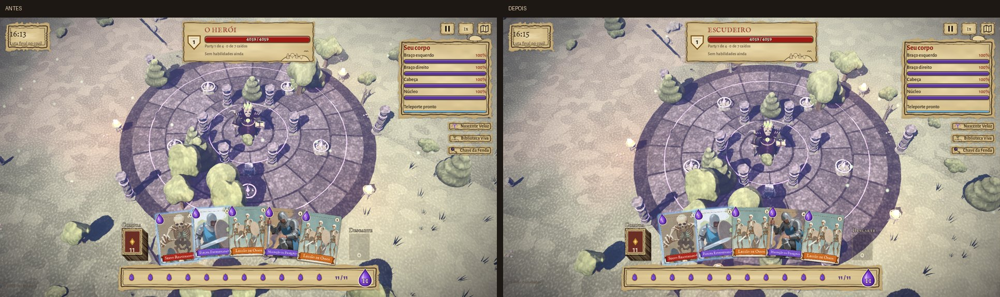
Sem Almas, nível do herói e Santuários: heróis derrubados, disputas, ouro e relíquias.
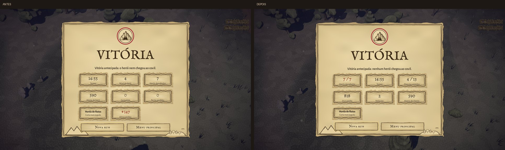
Idem; texto no plural.
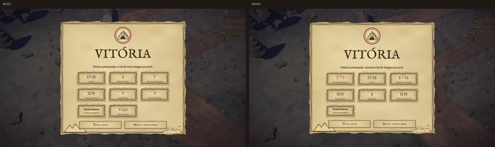
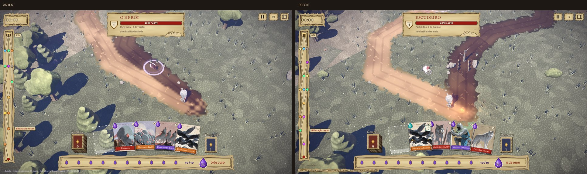
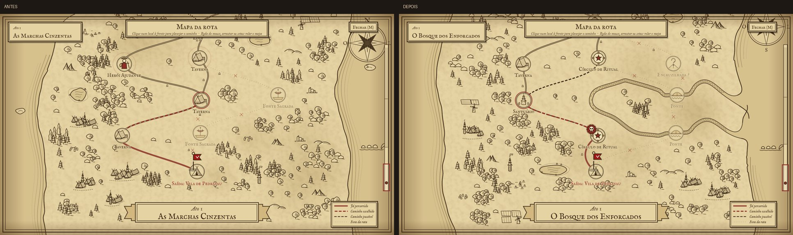
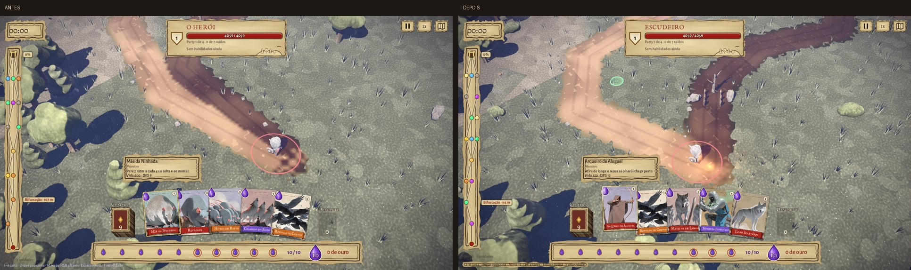